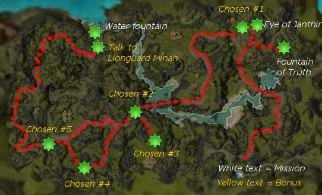

Elite: None / not listed
M9
Divinity Coast
◉ Mission Map

Click to enlarge · Local cache · Wiki
Summary (click to expand)
As a member of the White Mantle , you've been asked to take the Eye of Janthir to Loamhurst .
Region: Kryta · Mission: 9 of 25 · Type: Cooperative
✓ Objectives
Administer the Test of the Chosen.
- Retrieve the Eye of Janthir from Justiciar Hablion in the upper courtyard of Shaemoor.
- Deliver the Eye to the coastal city of Loamhurst.
- ADDED: Cleanse yourself in the Fountain of Truth on the hill to the southeast.
- *BONUS* Find and escort all the chosen to Loamhurst.
→ Walkthrough
Shaemoor is a short trip ahead from the start point. Justiciar Hablion will be waiting for you there, and speaking to him will trigger a cinematic which points you towards the Fountain of Truth where you will cleanse yourself by simply standing on it to receive the cleansed effect. Return to Hablion and acquire the Eye of Janthir. The eye will follow any cleansed party members and help you distinguish the Chosen from amongst the villagers. Those villagers who pass the test will now follow you to Loamhurst.
Head to the western gate in Shaemoor to continue. Head southwest to the bridge. While engaging foes, the Eye will assist by inflicting an area of effect knockdown using Janthir's Gaze.
After crossing the high bridge, you'll find a caravan of merchants under attack. If you save the merchants, each one rescued will grant your party a 2% morale boost. (The villagers that appear in the party list are involved in the bonus task and do not give morale boosts.)
Keep walking west until you reach the second Tengu boss on the border of the swamp, and then head north through the Undead until you reach Loamhurst. Before taking the Eye to the pedestal, talking to Lionguard Minah will reward your party for any Chosen delivered to him.
★ Bonus
To complete the bonus you need to rescue all five of the Chosen and escort them to Loamhurst unharmed. Chosen villagers will be added to the bottom of your party list as allies, which will help you tell which ones need to be saved. The second and fifth Chosen will be under attack by tengu immediately upon entering compass range, and the third and fourth will be dangerously close to wandering foes as well. Players should bring skills to assist in quickly killing the attackers or saving the Chosen with heals. Skills that hinder enemies at a distance (such as Ineptitude) are useful, as are speed boosts. Moving into close range to take advantage of Janthir's Gaze can significantly reduce the enemy's damage output. While fighting, don't forget about the Chosen you have already saved, since they can be attacked as you rush to the defence of the new Chosen.
The Chosen villagers and merchants are only added to the party list once a player enters compass range. Because of this, flagging heroes and henchmen to the locations of the Chosen using the Mission Map before the player enters compass range provides a very easy way to ensure survival of the Chosen. Moreover, the already saved Chosen will stay with the player and therefore be less vulnerable.
After saving the Chosen, the party leader must get close to them to make them follow; it is not enough just to have the Eye of Janthir reveal them as Chosen. The second Chosen also will not follow the party until he has been spoken to and the bonus objective has been displayed.
Once all five have been secured, there will still be a short trip towards Loamhurst through an area with poisoned water and undead; avoid letting the Chosen step in the swamp water. Finally, you must talk to Lionguard Minah or else you will lose the bonus by skipping to the end of the mission. Make sure all five are with you or the game will consider you have lost one during your way towards the bonus claim. The names of Chosen in the party window will become greyed out if they have been left behind.
◆ Hard Mode
The Chosen lose health in Hard mode much faster and getting to them in time may pose a problem. Consider bringing skills that increase the party's movement speed, as well as niche skills such as Ebon Escape. As all the Chosen will primarily be targeted by melee attacks, also consider skills as Gust and Withering Aura that can keep these targets from dying. Finally, a decent healer is most likely crucial to keep the Chosen alive throughout the mission. Taking an AoE skill will cause the enemies to scatter and change targets, which can help protect the Chosen.
If you can successfully rescue the Chosen from their initial attackers but struggle to keep them alive during the rest of the journey, you can avoid approaching them as the party leader so that they will not follow the party, then double back to collect them once the road to Loamhurst is clear. Remember that the first Chosen in Shaemoor is very close to the Eye's initial location, so you will need to keep to the left as you descend the stairs if you intend to use this strategy.
☠ Bosses & Elites
Elite: None / not listed
Elite: None / not listed
Elite: None / not listed
Elite: None / not listed
Elite: None / not listed
Elite: None / not listed
Elite: None / not listed
Elite: None / not listed
Elite: None / not listed
Elite: None / not listed
Elite: None / not listed
✦ Tips & Notes
Skill recommendations
- Complete exploration of this mission contributes approximately 1.0% to the Tyrian Cartographer title.
- Crossing the river without using the bridge can jeopardise the bonus objective, since the additional tengu foes on alternative routes might block you from rescuing a vulnerable Chosen villager.
- After completing this mission, your party will be taken to Druid's Overlook.
- When approaching the Fountain of Truth, the soundtrack Droknar's Forge will play in place of the usual Krytan soundtracks.
- Completion of this mission will fill in page #2 of The Flameseeker Prophecies storybook.
Notes
- Complete exploration of this mission contributes approximately 1.0% to the Tyrian Cartographer title.
- Crossing the river without using the bridge can jeopardise the bonus objective, since the additional tengu foes on alternative routes might block you from rescuing a vulnerable Chosen villager.
- After completing this mission, your party will be taken to Druid's Overlook.
- When approaching the Fountain of Truth, the soundtrack Droknar's Forge will play in place of the usual Krytan soundtracks.
- Completion of this mission will fill in page #2 of The Flameseeker Prophecies storybook.